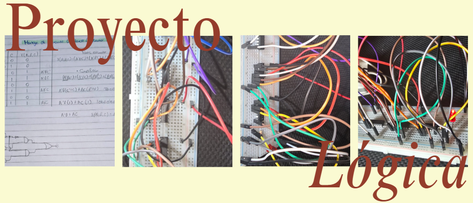
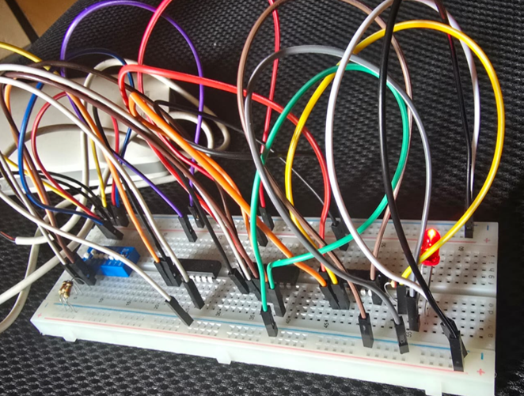

Proyecto de creación de un circuito lógico
Este proyecto es de carácter individual y consiste en representar funciones booleanas a partir de una tabla de verdad, con el objetivo de obtener su forma estándar. A partir de este resultado, se procede a diseñar y montar un circuito utilizando compuertas lógicas.
El objetivo principal es lograr que el LED encienda de acuerdo con los valores establecidos en la tabla de verdad, verificando así el correcto funcionamiento del circuito.
Para la elaboración del circuito, se emplean materiales como protoboard, resistencias, jumpers, LED y compuertas lógicas, específicamente OR, AND y NOT.
El objetivo es diseñar y comprobar un circuito lógico a partir de una tabla de verdad, utilizando funciones booleanas y compuertas lógicas, con el fin de verificar el correcto funcionamiento del circuito tanto en simulación como en físico.
En este proyecto primero encontré la forma estándar de la tabla de verdad que se me proporcionó, es decir, obtuve la función booleana para posteriormente dibujar el circuito lógico. Después de eso procedí a comprobar el circuito en línea para verificar su funcionamiento.
Luego de haber realizado la comprobación virtual, empecé a construir el circuito en físico. Los materiales que utilicé fueron un protoboard, un LED, resistencias, compuertas lógicas AND, OR y NOT, un multímetro, jumpers y un DIP switch de cuatro entradas.
Con ayuda de la licenciada armé el circuito lógico y posteriormente comprobé su funcionamiento utilizando la tabla de verdad proporcionada. Verifiqué que cuando el resultado de la tabla era 0, el LED no encendiera, y cuando el resultado era 1, el LED encendiera correctamente. Finalmente comprobé que todo el circuito funcionó de manera correcta.

